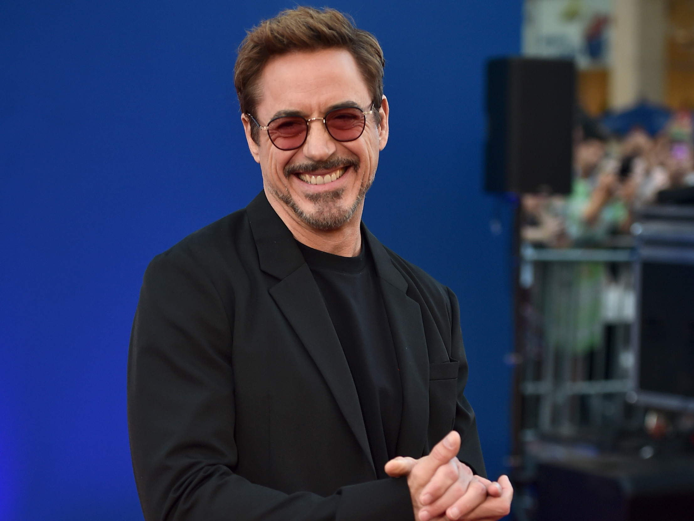
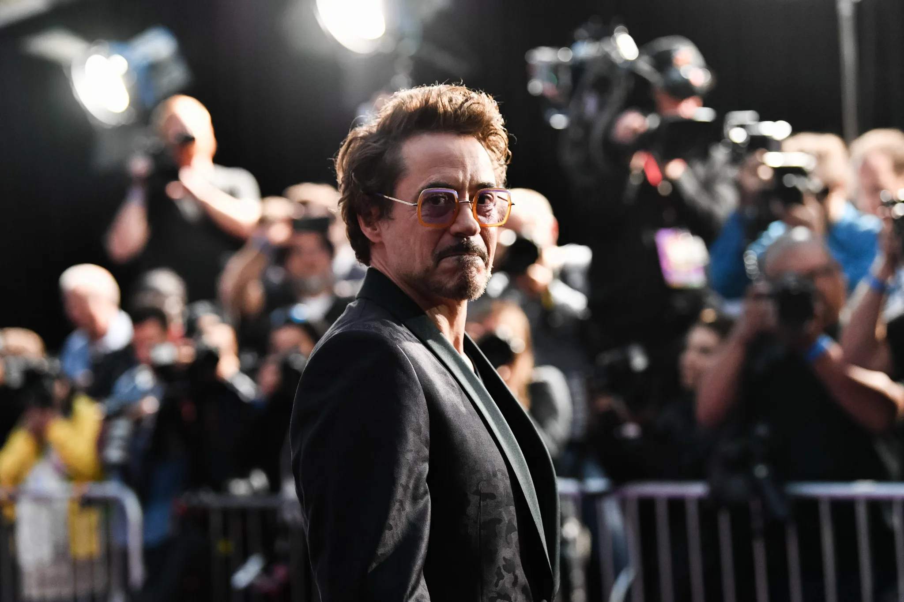
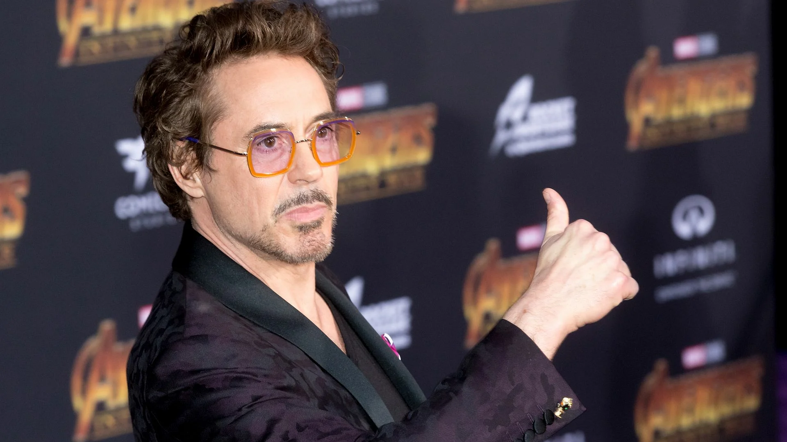

Когда мир Старка рушится на его глазах по вине неизвестных противников, Тони жаждет найти виновных и свести с ними счеты. Оказавшись в безвыходной ситуации, Старк может рассчитывать только на себя и свою изобретательность, чтобы защитить тех, кто ему дорог. Это становится настоящим испытанием для героя, которому придется не только сражаться с коварным врагом, но и разобраться в себе, чтобы найти ответ на вопрос, который давно его тревожит: что важнее - человек или костюм?.
Пока Мстители и их союзники продолжают защищать мир от различных опасностей, с которыми не смог бы справиться один супергерой, новая угроза возникает из космоса: Танос. Межгалактический тиран преследует цель собрать все шесть Камней Бесконечности - артефакты невероятной силы, с помощью которых можно менять реальность по своему желанию. Всё, с чем Мстители сталкивались ранее, вело к этому моменту – судьба Земли никогда ещё не была столь неопределённой.
Посмотреть